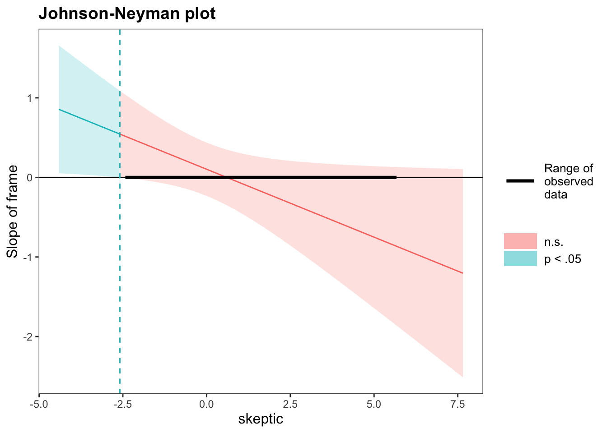

Chapter 7 Week7_2: R Lab on Disaster Dataset (Chapman and Lickel, 2016)
7.1 Data Prep
The following example data are from Chapman and Lickel (2016) Also example data in Chapter 12 of Hayes (2017)
Simply load the .rda into R:
load("disaster.rda")
head(disaster)## id frame donate justify skeptic
## 1 1 1 5.6 2.95 1.8
## 2 2 1 4.2 2.85 5.2
## 3 3 1 4.2 3.00 3.2
## 4 4 1 4.6 3.30 1.0
## 5 5 1 3.0 5.00 7.6
## 6 6 0 5.0 3.20 4.2str(disaster)## 'data.frame': 211 obs. of 5 variables:
## $ id : num 1 2 3 4 5 6 7 8 9 10 ...
## ..- attr(*, "format.spss")= chr "F8.0"
## ..- attr(*, "display_width")= int 6
## $ frame : num 1 1 1 1 1 0 0 1 0 0 ...
## ..- attr(*, "label")= chr "Experimental condition"
## ..- attr(*, "format.spss")= chr "F8.2"
## ..- attr(*, "labels")= Named num [1:2] 0 1
## .. ..- attr(*, "names")= chr [1:2] "naturally caused disaster" "climate change caused disaster"
## $ donate : num 5.6 4.2 4.2 4.6 3 5 4.8 6 4.2 4.4 ...
## ..- attr(*, "label")= chr "Positive attitudes toward donating"
## ..- attr(*, "format.spss")= chr "F8.2"
## ..- attr(*, "display_width")= int 9
## $ justify: num 2.95 2.85 3 3.3 5 3.2 2.9 1.4 3.25 3.55 ...
## ..- attr(*, "label")= chr "Negative justifications"
## ..- attr(*, "format.spss")= chr "F8.2"
## ..- attr(*, "display_width")= int 10
## $ skeptic: num 1.8 5.2 3.2 1 7.6 4.2 4.2 1.2 1.8 8.8 ...
## ..- attr(*, "label")= chr "Climate change skepticism"
## ..- attr(*, "format.spss")= chr "F8.2"If you are able to install package processR, you can also view its help page:
install.packages("processR")
# If error message persists, change the repository to CRAN:
install.packages("processR", repos="https://cran.rstudio.com/")
library(processR)
data(disaster)
# take a look at the dataset:
?disasterlibrary(processR)You probably have to go to https://www.xquartz.org/ to download and install X11, which is a server required by many R packages, including processR.
Disaster is a data.frame with 211 obs. of 5 variables:
- id
- frame: Experimental condition. 0 = naturally caused disaster, 1 = climate change caused disaster
- donate: Positive attitudes toward donating
- justify: Negative justifications
- skeptic: Climate change skepticism
7.1.1 Scatterplot Matrix
Before we build linear models, we should plot the relationship between pairs of variables:
library(PerformanceAnalytics)
chart.Correlation(disaster[,-1])7.1.2 p-value or bootstrapped confidence interval?
For models that involve mediation effects, we prefer to use bootstrap confidence intervals over p-values for evaluating the significance of parameter estimates. That is, in the parameter table generated by parameterEstimates() function:
- A coefficient is considered significant when the interval [ci.lower, ci.upper] does not include zero;
- A coefficient is considered insignificant when the interval [ci.lower, ci.upper] includes zero.
In most cases, bootstrap confidence intervals and p-values yield the same conclusions regarding the significance of parameter estimates. If not, bootstrap confidence intervals are used to make the final call.
In this document, all bootstrap confidence intervals and p-values yield the same conclusions regarding significances, so I’ll only refer to p-values for the readability of the analyses.
7.2 Model 1: Simple Linear Regression Model
With processR, you can draw concept diagram and statistical diagram of mediation and moderation models quite easily. For example:
labels=list(X="frame",M="justify",Y="donate",W="skeptic")
par(mfrow = c(2,1), mar=c(0,0,0,0), oma=c(0,0,0,0))
pmacroModel(0,labels=labels)
statisticalDiagram(0, labels=labels)
return the diagrams of a simple linear regression model.
For Model 1, let’s run a simple linear regression using lm() to estimate the total effect of frame on willingness to donate:
lm1 = lm(donate ~ frame , data = disaster)
summary(lm1)[[4]]## Estimate Std. Error t value Pr(>|t|)
## (Intercept) 4.56363636 0.1258337 36.2672028 3.955220e-92
## frame 0.08388839 0.1818769 0.4612372 6.451081e-01Note that the
[[4]]was added aftersummary(lm1)to request the coefficient table only.The total effect is c = 0.084 (p = 0.645), not significant.
However, we learned in this class that absence of association between X and Y does NOT mean that X isn’t affecting Y (remember inconsistent mediation?).
So let’s move on…
7.3 Model 2: Simple Mediation Model
Q: If a disaster is framed as the result of a climate change (instead of a natural disaster), do you think it’s justified to withhold aid to the victims, and thus become less willing to donate?
par(mfrow = c(1,2), mar=c(0,0,0,0), oma=c(0,0,0,0))
pmacroModel(4,labels=labels)
statisticalDiagram(4, labels=labels)Load the lavaan package:
library(lavaan)and test the mediation effect (ab) using bootstrap:
lm2.syntax <- '
donate ~ b*justify + cprime*frame
justify ~ a*frame
# Define new parameters
#The := operator in lavaan defines new parameters.
ab:= a*b
c:= a*b + cprime
'
set.seed(2022)
lm2.bfit = sem(lm2.syntax, data = disaster, se = "bootstrap", bootstrap = 1000, fixed.x=FALSE, meanstructure = TRUE)
summary(lm2.bfit, ci = T)## lavaan 0.6-10 ended normally after 19 iterations
##
## Estimator ML
## Optimization method NLMINB
## Number of model parameters 9
##
## Number of observations 211
##
## Model Test User Model:
##
## Test statistic 0.000
## Degrees of freedom 0
##
## Parameter Estimates:
##
## Standard errors Bootstrap
## Number of requested bootstrap draws 1000
## Number of successful bootstrap draws 1000
##
## Regressions:
## Estimate Std.Err z-value P(>|z|) ci.lower ci.upper
## donate ~
## justify (b) -0.953 0.065 -14.641 0.000 -1.078 -0.823
## frame (cprm) 0.212 0.139 1.526 0.127 -0.065 0.492
## justify ~
## frame (a) 0.134 0.131 1.023 0.306 -0.133 0.393
##
## Intercepts:
## Estimate Std.Err z-value P(>|z|) ci.lower ci.upper
## .donate 7.235 0.199 36.380 0.000 6.810 7.595
## .justify 2.802 0.083 33.785 0.000 2.644 2.967
## frame 0.479 0.036 13.458 0.000 0.403 0.545
##
## Variances:
## Estimate Std.Err z-value P(>|z|) ci.lower ci.upper
## .donate 0.948 0.118 8.061 0.000 0.712 1.171
## .justify 0.856 0.097 8.866 0.000 0.683 1.071
## frame 0.250 0.003 97.289 0.000 0.241 0.250
##
## Defined Parameters:
## Estimate Std.Err z-value P(>|z|) ci.lower ci.upper
## ab -0.128 0.125 -1.022 0.307 -0.378 0.125
## c 0.084 0.188 0.447 0.655 -0.253 0.476parameterEstimates(lm2.bfit, boot.ci.type = "bca.simple", standardized = T)## lhs op rhs label est se z pvalue ci.lower ci.upper std.lv std.all std.nox
## 1 donate ~ justify b -0.953 0.065 -14.641 0.000 -1.083 -0.828 -0.953 -0.673 -0.673
## 2 donate ~ frame cprime 0.212 0.139 1.526 0.127 -0.062 0.503 0.212 0.081 0.161
## 3 justify ~ frame a 0.134 0.131 1.023 0.306 -0.147 0.380 0.134 0.072 0.145
## 4 donate ~~ donate 0.948 0.118 8.061 0.000 0.735 1.214 0.948 0.549 0.549
## 5 justify ~~ justify 0.856 0.097 8.866 0.000 0.699 1.096 0.856 0.995 0.995
## 6 frame ~~ frame 0.250 0.003 97.289 0.000 0.244 0.250 0.250 1.000 0.250
## 7 donate ~1 7.235 0.199 36.380 0.000 6.808 7.590 7.235 5.506 5.506
## 8 justify ~1 2.802 0.083 33.785 0.000 2.649 2.976 2.802 3.022 3.022
## 9 frame ~1 0.479 0.036 13.458 0.000 0.390 0.536 0.479 0.958 0.479
## 10 ab := a*b ab -0.128 0.125 -1.022 0.307 -0.362 0.144 -0.128 -0.049 -0.097
## 11 c := a*b+cprime c 0.084 0.188 0.447 0.655 -0.233 0.524 0.084 0.032 0.064From the coefficient table, we can see:
- a path: a = 0.134 (p = 0.306)
- b path: b = -0.953 (p = 0.000)
- indirect effect: ab = -0.128 (p = 0.307)
- direct effect: cprime = 0.212 (p = 0.127)
- total effect: c = ab + cprime = 0.084 (p = 0.655)
- Except for b path, all effects above are not significant.
This tells us:
- The framing of the disaster did not significantly change people’s beliefs about whether providing aid to the victims is justified (a path)
- Justification for withholding aid did make participants less willing to donate (b path)
- However, the indirect effect ab was not significant, meaning justification for withholding did not explain the relationship between frame and willingness to donate
Let’s switch to moderation model:
7.4 Model 3: Simple Moderation Model
Skepticism of climate change cannot be changed by the frame, so skeptic is a moderator, not a mediator, it does not stand in the middle of the pathway
par(mfrow = c(1,2), mar=c(0,0,0,0), oma=c(0,0,0,0))
pmacroModel(1,labels=labels)
statisticalDiagram(1, labels=labels)Since the moderator skeptic is a continuous measure, we need to mean center it first:
disaster$skep_raw = disaster$skeptic
disaster$skeptic = scale(disaster$skep_raw, center = TRUE, scale = FALSE)
disaster$skep_sd = scale(disaster$skep_raw, center = TRUE, scale = TRUE)
disaster$skepxframe = disaster$skeptic * disaster$frame.. and manually create an interaction term by multiplying skeptic and frame:
disaster$skepxframe = disaster$skeptic * disaster$frameLet’s examine their means and standard deviations:
round(apply(disaster, 2, mean), 2)## id frame donate justify skeptic
## 106.00 0.48 4.60 2.87 0.00
## skep_raw skep_sd skepxframe
## 3.38 0.00 0.02round(apply(disaster, 2, sd), 2)## id frame donate justify skeptic
## 61.05 0.50 1.32 0.93 2.03
## skep_raw skep_sd skepxframe
## 2.03 1.00 1.40Let’s write the syntax for the simple moderation model:
lm3.syntax <- '
#Regression with interaction
donate ~ b1*skeptic + b2*frame + b3*skepxframe
'
lm3.fit = sem(lm3.syntax, data = disaster, fixed.x=FALSE, meanstructure = TRUE)
parameterEstimates(lm3.fit, ci = T)## lhs op rhs label est se z pvalue ci.lower ci.upper
## 1 donate ~ skeptic b1 -0.140 0.057 -2.433 0.015 -0.252 -0.027
## 2 donate ~ frame b2 0.103 0.169 0.609 0.542 -0.228 0.433
## 3 donate ~ skepxframe b3 -0.171 0.083 -2.054 0.040 -0.334 -0.008
## 4 donate ~~ donate 1.495 0.146 10.271 0.000 1.210 1.780
## 5 skeptic ~~ skeptic 4.113 0.400 10.271 0.000 3.328 4.897
## 6 skeptic ~~ frame 0.021 0.070 0.294 0.769 -0.116 0.157
## 7 skeptic ~~ skepxframe 1.957 0.237 8.249 0.000 1.492 2.423
## 8 frame ~~ frame 0.250 0.024 10.271 0.000 0.202 0.297
## 9 frame ~~ skepxframe 0.011 0.048 0.222 0.824 -0.084 0.105
## 10 skepxframe ~~ skepxframe 1.957 0.191 10.271 0.000 1.584 2.331
## 11 donate ~1 4.558 0.117 39.092 0.000 4.330 4.787
## 12 skeptic ~1 0.000 0.140 0.000 1.000 -0.274 0.274
## 13 frame ~1 0.479 0.034 13.919 0.000 0.411 0.546
## 14 skepxframe ~1 0.021 0.096 0.213 0.831 -0.168 0.209- b3 = -0.171, p = 0.040
- So this moderator, skeptic, is a significant moderator of the frame-donate path, that is, skepticism of climate change could change the effect of framing on willingness to donate.
7.4.1 JOHNSON-NEYMAN INTERVAL
interactionModel2 <- lm(donate ~ skeptic*frame, disaster)
summary(interactionModel2)##
## Call:
## lm(formula = donate ~ skeptic * frame, data = disaster)
##
## Residuals:
## Min 1Q Median 3Q Max
## -3.8341 -0.7077 0.1659 0.9101 2.6682
##
## Coefficients:
## Estimate Std. Error t value Pr(>|t|)
## (Intercept) 4.55815 0.11772 38.719 <2e-16 ***
## skeptic -0.13953 0.05790 -2.410 0.0168 *
## frame 0.10266 0.17016 0.603 0.5469
## skeptic:frame -0.17071 0.08393 -2.034 0.0432 *
## ---
## Signif. codes:
## 0 '***' 0.001 '**' 0.01 '*' 0.05 '.' 0.1 ' ' 1
##
## Residual standard error: 1.234 on 207 degrees of freedom
## Multiple R-squared: 0.1343, Adjusted R-squared: 0.1218
## F-statistic: 10.71 on 3 and 207 DF, p-value: 1.424e-06library(interactions)
interactions::johnson_neyman(interactionModel2, pred = "frame", modx = "skeptic", alpha = 0.05)## JOHNSON-NEYMAN INTERVAL
##
## When skeptic is OUTSIDE the interval [-2.59, 22.34],
## the slope of frame is p < .05.
##
## Note: The range of observed values of skeptic is
## [-2.38, 5.62]
- As can be seen, it appears that among those low in climate change skepticism (lower than -2.59), framing the drought as caused by climate change produced a greater willingness to donate (simple slopes were significantly positive) compared to when climate change was not described as the cause.
- Among climate change skeptics (i.e., those high on the skepticism scale), the willingness to donate to the victims were not affected the framing of the problem (simple slopes were not significantly different from 0).
Next, let’s test those Moderated Mediation Models one by one.
7.5 Model 4a: Moderated Mediation Model - Path a only
par(mfrow = c(1,2), mar=c(0,0,0,0), oma=c(0,0,0,0))
pmacroModel(7,labels=labels)
statisticalDiagram(7, labels=labels)Since the frame-justify (a path) is hypothesized to be moderated by skeptic, the simple slope of justify on frame is a function of skeptic, that is, a1+a3*skeptic
The indirect effect through justify also depends on skeptic, calculated as b*(a1+a3*skeptic)
Since skeptic is a continuous variable, we will pick three values from it. The chapter in Hayes (2017) picked the 16th, 50th, and 84th percentiles of the distribution using the quantile() function:
quantile(disaster$skeptic, probs = c(0.16, 0.5, 0.84))## 16% 50% 84%
## -1.7779621 -0.5779621 1.8220379which are:
- low: -1.78
- median: -0.58
- mean: 0 (why)
- high: 1.82
We’ll also define the index of moderated mediation to be:
- a3*b (refer to slides of week6_1)
Let’s write the syntax for the moderated mediation model:
lm4a.syntax <- '
donate ~ b*justify + cprime*frame
justify ~ a1*frame + a2*skeptic + a3*skepxframe
# Define simple slopes and conditional indirect effects using :=
# index of moderated mediation
IndMedMod:= a3*b
# simple slope of justify on frame is a1+a3*skeptic
aLow: = a1+a3*(-1.78)
aMedian: = a1+a3*(-0.58)
aMean: = a1+a3*(0)
aHigh: = a1+a3*1.82
# conditional indirect effects is b*(a1+a3*skeptic)
abLow: = b*aLow
abMedian: = b*aMedian
abMean: = b*aMean
abHigh: = b*aHigh
'
set.seed(2022)
lm4a.fit = sem(lm4a.syntax, data = disaster, se = "bootstrap", bootstrap = 1000, fixed.x=FALSE, meanstructure = TRUE)
parameterEstimates(lm4a.fit, level = 0.95, boot.ci.type = "bca.simple")## lhs op rhs label est se z pvalue ci.lower ci.upper
## 1 donate ~ justify b -0.953 0.065 -14.641 0.000 -1.083 -0.828
## 2 donate ~ frame cprime 0.212 0.139 1.526 0.127 -0.062 0.503
## 3 justify ~ frame a1 0.117 0.114 1.023 0.306 -0.113 0.324
## 4 justify ~ skeptic a2 0.105 0.043 2.459 0.014 0.020 0.194
## 5 justify ~ skepxframe a3 0.201 0.063 3.201 0.001 0.077 0.326
## 6 donate ~~ donate 0.948 0.118 8.061 0.000 0.735 1.214
## 7 justify ~~ justify 0.648 0.066 9.767 0.000 0.539 0.809
## 8 frame ~~ frame 0.250 0.003 97.289 0.000 0.242 0.250
## 9 frame ~~ skeptic 0.021 0.074 0.277 0.782 -0.125 0.168
## 10 frame ~~ skepxframe 0.011 0.052 0.207 0.836 -0.089 0.121
## 11 skeptic ~~ skeptic 4.113 0.498 8.257 0.000 3.211 5.198
## 12 skeptic ~~ skepxframe 1.957 0.349 5.606 0.000 1.333 2.721
## 13 skepxframe ~~ skepxframe 1.957 0.348 5.618 0.000 1.328 2.708
## 14 donate ~1 7.235 0.199 36.380 0.000 6.808 7.590
## 15 justify ~1 2.806 0.079 35.374 0.000 2.659 2.976
## 16 frame ~1 0.479 0.036 13.458 0.000 0.396 0.540
## 17 skeptic ~1 0.000 0.142 0.000 1.000 -0.274 0.286
## 18 skepxframe ~1 0.021 0.099 0.206 0.837 -0.173 0.223
## 19 IndMedMod := a3*b IndMedMod -0.192 0.062 -3.073 0.002 -0.327 -0.076
## 20 aLow := a1+a3*(-1.78) aLow -0.241 0.154 -1.568 0.117 -0.563 0.045
## 21 aMedian := a1+a3*(-0.58) aMedian 0.000 0.117 0.004 0.997 -0.240 0.209
## 22 aMean := a1+a3*(0) aMean 0.117 0.115 1.023 0.307 -0.113 0.324
## 23 aHigh := a1+a3*1.82 aHigh 0.483 0.168 2.874 0.004 0.138 0.829
## 24 abLow := b*aLow abLow 0.230 0.149 1.546 0.122 -0.044 0.540
## 25 abMedian := b*aMedian abMedian 0.000 0.112 -0.004 0.997 -0.201 0.236
## 26 abMean := b*aMean abMean -0.112 0.109 -1.027 0.305 -0.306 0.103
## 27 abHigh := b*aHigh abHigh -0.461 0.164 -2.811 0.005 -0.796 -0.130So we have:
- interaction of skepxframe on justify: a3 = 0.201 (p = 0.001)
The overall effect of frame on justify is significantly moderated by skeptic. That is, how the disaster is framed has a differential effect for people who differ in their climate change skepticism on their beliefs that if it was justified to withhold aid to the victims.
Let’s look at the simple slopes.
- aLow = -0.241 (p = 0.117)
- aMedian = 0 (p = 0.997)
- aMean = 0.117 (p = 0.307)
- aHigh = 0.483 (p = 0.004)
Moreover, the simple slope aHigh is positive and aLow is negative. That is, when told that the disaster is the result of climate change instead of natural disaster (changing frame from 0 to 1), those who doubt climate change (high on skepticism) think it’s justified to withhold the aid whereas those who do not doubt (low on skepticism) it think it’s not justified to withhold the aid.
Okay! The a path is moderated. What about the mediation effect ab?
- IndexOfModMed = -0.192 (p = 0.002)
IndexOfModMed is sig! Woo-hoo! Indirect effect is moderated, too! So what story does it tell you?
- abLow = 0.230 (p = 0.122)
- abMedian = 0.000 (p = 0.997)
- abMean = -0.112 (p = 0.305)
- abHigh = -0.461 (p = 0.005)
Furthermore, abHigh is negative and abLow is positive, meaning that framing the disaster as caused by climate change leads to less donation for people who doubt climate change (high on skepticism) but it leads to more donation for people who believe it (low on skepticism). The reason for this differential effect is that those who doubt climate change tend to favor the idea of withholding the aid, thus leading to less donation.
7.6 Model 4b: Moderated Mediation Model - Path b only
par(mfrow = c(1,2), mar=c(0,0,0,0), oma=c(0,0,0,0))
pmacroModel(14,labels=labels)
statisticalDiagram(14, labels=labels)Since justify is also a continuous measure, we need to mean center it first:
disaster$just_raw = disaster$justify
disaster$justify = scale(disaster$just_raw, center = TRUE, scale = FALSE)
disaster$just_sd = scale(disaster$just_raw, center = TRUE, scale = TRUE)and create an interaction term by multiplying skeptic by justify (note that this is a new interaction term!):
disaster$skepxjusti = disaster$skeptic * disaster$justifyLet’s examine their means and standard deviations:
round(apply(disaster[,-1], 2, mean), 2)## frame donate justify skeptic skep_raw
## 0.48 4.60 0.00 0.00 3.38
## skep_sd skepxframe just_raw just_sd skepxjusti
## 0.00 0.02 2.87 0.00 0.83round(apply(disaster[,-1], 2, sd), 2)## frame donate justify skeptic skep_raw
## 0.50 1.32 0.93 2.03 2.03
## skep_sd skepxframe just_raw just_sd skepxjusti
## 1.00 1.40 0.93 1.00 2.66Since the b path is hypothesized moderated by skeptic, the simple slope of donation on justify (b path) depends on skeptic, the indirect effect through justify (ab) also depends on skeptic.
We’ll define an index of moderated mediation to be:
- a*b3 (can you derive this?)
Let’s write the syntax for the moderated mediation model:
lm4b.syntax <- '
donate ~ b1*justify + cprime*frame + b2*skeptic + b3*skepxjusti
justify ~ a*frame
# Define simple slopes and conditional indirect effects using :=
# index of moderated mediation
IndMedMod:= a*b3
# simple slope of donate on justify is b1+b3*skeptic
bLow: = b1+b3*(-1.78)
bMedian: = b1+b3*(-0.58)
bMean: = b1+b3*(0)
bHigh: = b1+b3*1.82
# conditional indirect effects is a*(b1+b3*skeptic)
abLow: = a*bLow
abMedian: = a*bMedian
abMean: = a*bMean
abHigh: = a*bHigh
'
set.seed(2022)
lm4b.fit = sem(lm4b.syntax, data = disaster, se = "bootstrap", bootstrap = 1000, fixed.x=FALSE, meanstructure = TRUE)
parameterEstimates(lm4b.fit, level = 0.95, boot.ci.type = "bca.simple")## lhs op rhs label est se z pvalue ci.lower ci.upper
## 1 donate ~ justify b1 -0.922 0.079 -11.611 0.000 -1.085 -0.772
## 2 donate ~ frame cprime 0.204 0.140 1.455 0.146 -0.064 0.492
## 3 donate ~ skeptic b2 -0.040 0.041 -0.968 0.333 -0.127 0.039
## 4 donate ~ skepxjusti b3 0.008 0.026 0.327 0.743 -0.043 0.059
## 5 justify ~ frame a 0.134 0.131 1.023 0.306 -0.147 0.380
## 6 donate ~~ donate 0.943 0.116 8.128 0.000 0.736 1.200
## 7 justify ~~ justify 0.856 0.097 8.866 0.000 0.699 1.096
## 8 frame ~~ frame 0.250 0.003 97.289 0.000 0.244 0.250
## 9 frame ~~ skeptic 0.021 0.074 0.277 0.782 -0.125 0.168
## 10 frame ~~ skepxjusti 0.204 0.091 2.233 0.026 0.045 0.414
## 11 skeptic ~~ skeptic 4.113 0.498 8.257 0.000 3.211 5.198
## 12 skeptic ~~ skepxjusti 2.067 0.867 2.383 0.017 0.691 4.089
## 13 skepxjusti ~~ skepxjusti 7.017 2.414 2.907 0.004 3.602 13.111
## 14 donate ~1 4.499 0.110 40.942 0.000 4.288 4.708
## 15 justify ~1 -0.064 0.083 -0.775 0.438 -0.218 0.109
## 16 frame ~1 0.479 0.036 13.458 0.000 0.396 0.540
## 17 skeptic ~1 0.000 0.142 0.000 1.000 -0.274 0.286
## 18 skepxjusti ~1 0.828 0.179 4.632 0.000 0.526 1.218
## 19 IndMedMod := a*b3 IndMedMod 0.001 0.005 0.243 0.808 -0.005 0.018
## 20 bLow := b1+b3*(-1.78) bLow -0.937 0.103 -9.140 0.000 -1.138 -0.729
## 21 bMedian := b1+b3*(-0.58) bMedian -0.927 0.085 -10.904 0.000 -1.096 -0.758
## 22 bMean := b1+b3*(0) bMean -0.922 0.079 -11.605 0.000 -1.085 -0.772
## 23 bHigh := b1+b3*1.82 bHigh -0.907 0.079 -11.427 0.000 -1.073 -0.752
## 24 abLow := a*bLow abLow -0.126 0.123 -1.023 0.306 -0.369 0.130
## 25 abMedian := a*bMedian abMedian -0.125 0.122 -1.023 0.306 -0.361 0.137
## 26 abMean := a*bMean abMean -0.124 0.121 -1.022 0.307 -0.360 0.135
## 27 abHigh := a*bHigh abHigh -0.122 0.120 -1.015 0.310 -0.351 0.130So we have:
- b3 = 0.008 (p = 0.743)
The effect of justify on donate is not moderated by skeptic. That is, justification for withholding aid always leads to less donation has a fixed effect on their willingness to donate (b path) regardless of their climate change skepticism.
Let’s look at the simple slopes.
- bLow = -0.937 (p = 0.000)
- bMedian = -0.927 (p = 0.000)
- bMean = -0.922 (p = 0.000)
- bHigh = -0.907 (p = 0.000)
which do not change much as their climate change skepticism change. Justification for withholding aid always leads to less donation. Skeptic is not an effective moderator.
Let’s look at the indirect effects
- IndexOfModMed = 0.001 (p = 0.808)
- abLow = -0.126 (p = 0.306)
- abMedian = -0.125 (p = 0.306)
- abMean = -0.124 (p = 0.307)
- abHigh = -0.122 (p = 0.310)
Similarly, skeptic is not a good moderator for the indirect effect given that IndexOfModMed is not significant and the indirect effects at high/low levels of skepticism do not differ much.
7.7 Model 4c: Moderation & Mediation Model - Path cprime only
par(mfrow = c(1,2), mar=c(0,0,0,0), oma=c(0,0,0,0))
pmacroModel(5,labels=labels)
statisticalDiagram(5, labels=labels)Since there is NO indirect effect being moderated here, we’ll not define any index of moderation mediation. There is only one c3prime coefficient that quantifies the moderation effect of skeptic on frame-donation path.
lm4c.syntax <- '
donate ~ b*justify + c1prime*frame + skeptic + c3prime*skepxframe
justify ~ a*frame
# Define new parameters
#The := operator in lavaan defines new parameters.
# simple slope of donate on frame is c1prime+c3prime*skeptic
cLow: = c1prime+c3prime*(-1.78)
cMedian: = c1prime+c3prime*(-0.58)
cMean: = c1prime+c3prime*(0)
cHigh: = c1prime+c3prime*1.82
# mediation effect
ab:= a*b
'
set.seed(2022)
lm4c.fit = sem(lm4c.syntax, data = disaster, se = "bootstrap", bootstrap = 1000, fixed.x=FALSE, meanstructure = TRUE)
parameterEstimates(lm4c.fit, level = 0.95, boot.ci.type = "bca.simple")## lhs op rhs label est se z pvalue ci.lower ci.upper
## 1 donate ~ justify b -0.923 0.078 -11.781 0.000 -1.076 -0.764
## 2 donate ~ frame c1prime 0.211 0.140 1.503 0.133 -0.064 0.496
## 3 donate ~ skeptic -0.043 0.057 -0.742 0.458 -0.165 0.061
## 4 donate ~ skepxframe c3prime 0.015 0.074 0.203 0.839 -0.120 0.171
## 5 justify ~ frame a 0.134 0.131 1.023 0.306 -0.147 0.380
## 6 donate ~~ donate 0.943 0.116 8.152 0.000 0.743 1.208
## 7 justify ~~ justify 0.856 0.097 8.866 0.000 0.699 1.096
## 8 frame ~~ frame 0.250 0.003 97.289 0.000 0.244 0.250
## 9 frame ~~ skeptic 0.021 0.074 0.277 0.782 -0.125 0.168
## 10 frame ~~ skepxframe 0.011 0.052 0.207 0.836 -0.089 0.121
## 11 skeptic ~~ skeptic 4.113 0.498 8.257 0.000 3.211 5.198
## 12 skeptic ~~ skepxframe 1.957 0.349 5.606 0.000 1.333 2.721
## 13 skepxframe ~~ skepxframe 1.957 0.348 5.618 0.000 1.328 2.708
## 14 donate ~1 4.503 0.109 41.164 0.000 4.283 4.711
## 15 justify ~1 -0.064 0.083 -0.775 0.438 -0.218 0.109
## 16 frame ~1 0.479 0.036 13.458 0.000 0.396 0.540
## 17 skeptic ~1 0.000 0.142 0.000 1.000 -0.274 0.286
## 18 skepxframe ~1 0.021 0.099 0.206 0.837 -0.173 0.223
## 19 cLow := c1prime+c3prime*(-1.78) cLow 0.184 0.172 1.074 0.283 -0.150 0.527
## 20 cMedian := c1prime+c3prime*(-0.58) cMedian 0.202 0.138 1.463 0.143 -0.062 0.482
## 21 cMean := c1prime+c3prime*(0) cMean 0.211 0.140 1.503 0.133 -0.064 0.496
## 22 cHigh := c1prime+c3prime*1.82 cHigh 0.238 0.213 1.118 0.264 -0.153 0.662
## 23 ab := a*b ab -0.124 0.122 -1.020 0.308 -0.356 0.138Since we have:
- c3prime = 0.015 (p = 0.839)
Skeptic is not a moderator for this frame-donation path (cprime).
The mediation effect:
- ab = -0.124 (p = 0.308)
is not significant, just like in Model 2.
7.8 Model 4d: Moderated Mediation Model - Path a and cprime
par(mfrow = c(1,2), mar=c(0,0,0,0), oma=c(0,0,0,0))
pmacroModel(8,labels=labels)
statisticalDiagram(8, labels=labels)Model 4d is very similar to Model 4a, except that cprime path is also moderated. We’ll still define the index of moderated mediation to be:
- a3*b
lm4d.syntax <- '
donate ~ b*justify + c1prime*frame + c2prime*skeptic + c3prime*skepxframe
justify ~ a1*frame + a2*skeptic + a3*skepxframe
# Define simple slopes and conditional indirect effects using :=
# index of moderated mediation
IndMedMod:= a3*b
# simple slope of justify on frame is a1+a3*skeptic
aLow: = a1+a3*(-1.78)
aMedian: = a1+a3*(-0.58)
aMean: = a1+a3*(0)
aHigh: = a1+a3*1.82
# conditional indirect effects is b*(a1+a3*skeptic)
abLow: = b*aLow
abMedian: = b*aMedian
abMean: = b*aMean
abHigh: = b*aHigh
'
set.seed(2022)
lm4d.fit = sem(lm4d.syntax, data = disaster, se = "bootstrap", bootstrap = 1000, fixed.x=FALSE, meanstructure = TRUE)
parameterEstimates(lm4d.fit, level = 0.95, boot.ci.type = "bca.simple")## lhs op rhs label est se z pvalue ci.lower ci.upper
## 1 donate ~ justify b -0.923 0.078 -11.781 0.000 -1.076 -0.764
## 2 donate ~ frame c1prime 0.211 0.140 1.503 0.133 -0.064 0.496
## 3 donate ~ skeptic c2prime -0.043 0.057 -0.742 0.458 -0.165 0.061
## 4 donate ~ skepxframe c3prime 0.015 0.074 0.203 0.839 -0.120 0.171
## 5 justify ~ frame a1 0.117 0.114 1.023 0.306 -0.113 0.324
## 6 justify ~ skeptic a2 0.105 0.043 2.459 0.014 0.020 0.194
## 7 justify ~ skepxframe a3 0.201 0.063 3.201 0.001 0.077 0.326
## 8 donate ~~ donate 0.943 0.116 8.152 0.000 0.743 1.208
## 9 justify ~~ justify 0.648 0.066 9.767 0.000 0.539 0.809
## 10 frame ~~ frame 0.250 0.003 97.289 0.000 0.244 0.250
## 11 frame ~~ skeptic 0.021 0.074 0.277 0.782 -0.125 0.168
## 12 frame ~~ skepxframe 0.011 0.052 0.207 0.836 -0.089 0.121
## 13 skeptic ~~ skeptic 4.113 0.498 8.257 0.000 3.211 5.198
## 14 skeptic ~~ skepxframe 1.957 0.349 5.606 0.000 1.333 2.721
## 15 skepxframe ~~ skepxframe 1.957 0.348 5.618 0.000 1.328 2.708
## 16 donate ~1 4.503 0.109 41.164 0.000 4.283 4.711
## 17 justify ~1 -0.060 0.079 -0.759 0.448 -0.208 0.109
## 18 frame ~1 0.479 0.036 13.458 0.000 0.396 0.540
## 19 skeptic ~1 0.000 0.142 0.000 1.000 -0.274 0.286
## 20 skepxframe ~1 0.021 0.099 0.206 0.837 -0.173 0.223
## 21 IndMedMod := a3*b IndMedMod -0.186 0.062 -2.979 0.003 -0.318 -0.071
## 22 aLow := a1+a3*(-1.78) aLow -0.241 0.154 -1.568 0.117 -0.563 0.045
## 23 aMedian := a1+a3*(-0.58) aMedian 0.000 0.117 0.004 0.997 -0.240 0.209
## 24 aMean := a1+a3*(0) aMean 0.117 0.115 1.023 0.307 -0.113 0.324
## 25 aHigh := a1+a3*1.82 aHigh 0.483 0.168 2.874 0.004 0.138 0.829
## 26 abLow := b*aLow abLow 0.222 0.146 1.526 0.127 -0.036 0.532
## 27 abMedian := b*aMedian abMedian 0.000 0.108 -0.004 0.997 -0.194 0.228
## 28 abMean := b*aMean abMean -0.108 0.105 -1.026 0.305 -0.301 0.095
## 29 abHigh := b*aHigh abHigh -0.446 0.162 -2.757 0.006 -0.785 -0.127Here we have two interaction coefficients:
- a3 = 0.201 (p = 0.001)
- c3prime = 0.015 (p = 0.839)
so that skeptic is a moderator for the frame-to-justify path (a path) but not a moderator for frame-to-donate path (cprime path). For the frame-to-justify path:
- aLow = -0.241 (p = 0.117)
- aMedian = 0 (p = 0.997)
- aMean = 0.117 (p = 0.307)
- aHigh = 0.483 (p = 0.004)
which are exactly the same as those in Model 4a. The simple slope aHigh is positive and aLow is negative. Those who are high on climate change skepticism think it’s justified to withhold the aid whereas those who are low on the skepticism do not think it’s justified to withhold the aid.
- IndexOfModMed = -0.186 (p = 0.003)
- abLow = 0.222 (p = 0.127)
- abMedian = 0.000 (p = 0.997)
- abMean = -0.108 (p = 0.305)
- abHigh = -0.446 (p = 0.006)
which are close to those in Model 4a. The indirect effect of donate on frame through justify (ab path) is moderated by skeptic (IndexOfModMed is sig!). Moreover, abHigh is negative and abLow is positive, meaning that framing the disaster as caused by climate change leads to less donation for people who doubt climate change but it leads to more donation for people who believes it because they do not think it’s justified to withhold the aid.
7.9 Model 4e: Moderated Mediation Model - Path b and cprime
par(mfrow = c(1,2), mar=c(0,0,0,0), oma=c(0,0,0,0))
pmacroModel(15,labels=labels)
statisticalDiagram(15, labels=labels)Model 4e is very similar to Model 4b except that cprime path is also moderated. We’ll still define the index of moderated mediation to be:
- a*b3 (actually, a*b2 in this diagram)
Let’s write the syntax for the moderated mediation model:
lm4e.syntax <- '
donate ~ b1*justify + b2*skepxjusti + c1prime*frame + c2prime*skeptic + c3prime*skepxframe
justify ~ a*frame
# Define simple slopes and conditional indirect effects using :=
# index of moderated mediation
IndMedMod:= a*b2
# simple slope of donate on justify is b1+b2*skeptic
bLow: = b1+b2*(-1.78)
bMedian: = b1+b2*(-0.58)
bMean: = b1+b2*(0)
bHigh: = b1+b2*1.82
# conditional indirect effects is a*(b1+b2*skeptic)
abLow: = a*bLow
abMedian: = a*bMedian
abMean: = a*bMean
abHigh: = a*bHigh
'
set.seed(2022)
lm4e.fit = sem(lm4e.syntax, data = disaster, se = "bootstrap", bootstrap = 1000, fixed.x=FALSE, meanstructure = TRUE)
parameterEstimates(lm4e.fit, level = 0.95, boot.ci.type = "bca.simple")## lhs op rhs label est se z pvalue ci.lower ci.upper
## 1 donate ~ justify b1 -0.925 0.081 -11.473 0.000 -1.085 -0.762
## 2 donate ~ skepxjusti b2 0.007 0.028 0.258 0.797 -0.047 0.063
## 3 donate ~ frame c1prime 0.205 0.143 1.432 0.152 -0.075 0.500
## 4 donate ~ skeptic c2prime -0.043 0.058 -0.749 0.454 -0.165 0.058
## 5 donate ~ skepxframe c3prime 0.009 0.079 0.119 0.905 -0.139 0.171
## 6 justify ~ frame a 0.134 0.131 1.023 0.306 -0.147 0.380
## 7 donate ~~ donate 0.943 0.116 8.148 0.000 0.744 1.212
## 8 justify ~~ justify 0.856 0.097 8.866 0.000 0.699 1.096
## 9 skepxjusti ~~ skepxjusti 7.017 2.414 2.907 0.004 3.602 13.111
## 10 skepxjusti ~~ frame 0.204 0.091 2.233 0.026 0.045 0.414
## 11 skepxjusti ~~ skeptic 2.067 0.867 2.383 0.017 0.691 4.089
## 12 skepxjusti ~~ skepxframe 1.828 0.784 2.332 0.020 0.600 3.681
## 13 frame ~~ frame 0.250 0.003 97.289 0.000 0.244 0.250
## 14 frame ~~ skeptic 0.021 0.074 0.277 0.782 -0.125 0.168
## 15 frame ~~ skepxframe 0.011 0.052 0.207 0.836 -0.089 0.121
## 16 skeptic ~~ skeptic 4.113 0.498 8.257 0.000 3.211 5.198
## 17 skeptic ~~ skepxframe 1.957 0.349 5.606 0.000 1.333 2.721
## 18 skepxframe ~~ skepxframe 1.957 0.348 5.618 0.000 1.328 2.708
## 19 donate ~1 4.499 0.110 40.945 0.000 4.283 4.708
## 20 justify ~1 -0.064 0.083 -0.775 0.438 -0.218 0.109
## 21 skepxjusti ~1 0.828 0.179 4.632 0.000 0.526 1.218
## 22 frame ~1 0.479 0.036 13.458 0.000 0.397 0.540
## 23 skeptic ~1 0.000 0.142 0.000 1.000 -0.274 0.286
## 24 skepxframe ~1 0.021 0.099 0.206 0.837 -0.173 0.223
## 25 IndMedMod := a*b2 IndMedMod 0.001 0.005 0.189 0.850 -0.006 0.018
## 26 bLow := b1+b2*(-1.78) bLow -0.937 0.103 -9.121 0.000 -1.142 -0.730
## 27 bMedian := b1+b2*(-0.58) bMedian -0.929 0.085 -10.877 0.000 -1.096 -0.756
## 28 bMean := b1+b2*(0) bMean -0.925 0.081 -11.467 0.000 -1.085 -0.762
## 29 bHigh := b1+b2*1.82 bHigh -0.912 0.086 -10.622 0.000 -1.084 -0.741
## 30 abLow := a*bLow abLow -0.126 0.123 -1.024 0.306 -0.372 0.129
## 31 abMedian := a*bMedian abMedian -0.125 0.122 -1.022 0.307 -0.366 0.127
## 32 abMean := a*bMean abMean -0.124 0.122 -1.021 0.307 -0.361 0.132
## 33 abHigh := a*bHigh abHigh -0.122 0.121 -1.012 0.312 -0.349 0.133Here we have two interaction coefficients:
- b2 = 0.007 (p = 0.258)
- c3prime = 0.009 (p = 0.905)
so that skeptic is not a moderator for the b path nor for the cprime path. For the simple slopes of b path:
- bLow = -0.937 (p = 0.000)
- bMedian = -0.929 (p = 0.000)
- bMean = -0.925 (p = 0.000)
- bHigh = -0.912 (p = 0.000)
which do not change much as their climate change skepticism change. Justification for withholding aid always leads to less donation. Skeptic is not an effective moderator.
Let’s look at the indirect effects:
- IndexOfModMed = 0.001 (p = 0.850)
- abLow = -0.126 (p = 0.306)
- abMedian = -0.125 (p = 0.307)
- abMean = -0.124 (p = 0.307)
- abHigh = -0.122 (p = 0.312)
Similarly, skeptic is not a good moderator for the indirect effect given that IndexOfModMed is not significant and the indirect effects at high/low levels of skepticism do not differ much.
7.10 Model 4f: Moderated Mediation Model - Path a and b
par(mfrow = c(1,2), mar=c(0,0,0,0), oma=c(0,0,0,0))
pmacroModel(58,labels=labels)
statisticalDiagram(58, labels=labels)When both a and b are moderated by the same moderator, we have:
- a = a1 + a3*skep
- b = b1 + b3*skep
- ab = (a1 + a3*skep)*(b1 + b3*skep) = a1*b1 + (a1*b3+a3*b1)*skep + a3*b3*skep^2
So the indirect effect does not depend on the moderator in a linear way.
We don’t have a formal definition of index of moderated mediation in this scenario. If we are lucky, we might get both (a1*b3+a3*b1) and a3*b3 to be significant…
Let’s write the syntax for the moderated mediation model:
lm4f.syntax <- '
donate ~ b1*justify + b2*skeptic + b3*skepxjusti + cprime*frame
justify ~ a1*frame + a2*skeptic + a3*skepxframe
# index of moderated mediation
IndMedMod1:= a1*b3+a3*b1
IndMedMod2:= a3*b3
# simple slope of justify on frame is a1+a3*skeptic
aLow: = a1+a3*(-1.78)
aMedian: = a1+a3*(-0.58)
aMean: = a1+a3*(0)
aHigh: = a1+a3*1.82
# simple slope of donate on justify is b1+b3*skeptic
bLow: = b1+b3*(-1.78)
bMedian: = b1+b3*(-0.58)
bMean: = b1+b3*(0)
bHigh: = b1+b3*1.82
# conditional indirect effects is a*(b1+b3*skeptic)
abLow: = aLow*bLow
abMedian: = aMedian*bMedian
abMean: = aMean*bMean
abHigh: = aHigh*bHigh
'
set.seed(2022)
lm4f.fit = sem(lm4f.syntax, data = disaster, se = "bootstrap", bootstrap = 1000, fixed.x=FALSE, meanstructure = TRUE)
parameterEstimates(lm4f.fit, level = 0.95, boot.ci.type = "bca.simple")## lhs op rhs label est se z pvalue ci.lower ci.upper
## 1 donate ~ justify b1 -0.922 0.079 -11.611 0.000 -1.085 -0.772
## 2 donate ~ skeptic b2 -0.040 0.041 -0.968 0.333 -0.127 0.039
## 3 donate ~ skepxjusti b3 0.008 0.026 0.327 0.743 -0.043 0.059
## 4 donate ~ frame cprime 0.204 0.140 1.455 0.146 -0.064 0.492
## 5 justify ~ frame a1 0.117 0.114 1.023 0.306 -0.113 0.324
## 6 justify ~ skeptic a2 0.105 0.043 2.459 0.014 0.020 0.194
## 7 justify ~ skepxframe a3 0.201 0.063 3.201 0.001 0.077 0.326
## 8 donate ~~ donate 0.943 0.116 8.129 0.000 0.736 1.200
## 9 justify ~~ justify 0.648 0.066 9.767 0.000 0.539 0.809
## 10 skeptic ~~ skeptic 4.113 0.498 8.257 0.000 3.211 5.198
## 11 skeptic ~~ skepxjusti 2.067 0.867 2.383 0.017 0.691 4.089
## 12 skeptic ~~ frame 0.021 0.074 0.277 0.782 -0.125 0.168
## 13 skeptic ~~ skepxframe 1.957 0.349 5.606 0.000 1.333 2.721
## 14 skepxjusti ~~ skepxjusti 7.017 2.414 2.907 0.004 3.602 13.111
## 15 skepxjusti ~~ frame 0.204 0.091 2.233 0.026 0.045 0.414
## 16 skepxjusti ~~ skepxframe 1.828 0.784 2.332 0.020 0.600 3.681
## 17 frame ~~ frame 0.250 0.003 97.289 0.000 0.244 0.250
## 18 frame ~~ skepxframe 0.011 0.052 0.207 0.836 -0.089 0.121
## 19 skepxframe ~~ skepxframe 1.957 0.348 5.618 0.000 1.328 2.708
## 20 donate ~1 4.499 0.110 40.942 0.000 4.288 4.708
## 21 justify ~1 -0.060 0.079 -0.759 0.448 -0.208 0.109
## 22 skeptic ~1 0.000 0.142 0.000 1.000 -0.274 0.286
## 23 skepxjusti ~1 0.828 0.179 4.632 0.000 0.526 1.218
## 24 frame ~1 0.479 0.036 13.458 0.000 0.396 0.540
## 25 skepxframe ~1 0.021 0.099 0.206 0.837 -0.173 0.223
## 26 IndMedMod1 := a1*b3+a3*b1 IndMedMod1 -0.185 0.062 -2.975 0.003 -0.324 -0.071
## 27 IndMedMod2 := a3*b3 IndMedMod2 0.002 0.005 0.330 0.741 -0.009 0.012
## 28 aLow := a1+a3*(-1.78) aLow -0.241 0.154 -1.568 0.117 -0.563 0.045
## 29 aMedian := a1+a3*(-0.58) aMedian 0.000 0.117 0.004 0.997 -0.240 0.209
## 30 aMean := a1+a3*(0) aMean 0.117 0.115 1.023 0.307 -0.113 0.324
## 31 aHigh := a1+a3*1.82 aHigh 0.483 0.168 2.874 0.004 0.138 0.829
## 32 bLow := b1+b3*(-1.78) bLow -0.937 0.103 -9.140 0.000 -1.138 -0.729
## 33 bMedian := b1+b3*(-0.58) bMedian -0.927 0.085 -10.904 0.000 -1.096 -0.758
## 34 bMean := b1+b3*(0) bMean -0.922 0.079 -11.605 0.000 -1.085 -0.772
## 35 bHigh := b1+b3*1.82 bHigh -0.907 0.079 -11.427 0.000 -1.073 -0.752
## 36 abLow := aLow*bLow abLow 0.226 0.150 1.501 0.133 -0.035 0.578
## 37 abMedian := aMedian*bMedian abMedian 0.000 0.109 -0.004 0.997 -0.192 0.234
## 38 abMean := aMean*bMean abMean -0.108 0.105 -1.028 0.304 -0.304 0.096
## 39 abHigh := aHigh*bHigh abHigh -0.438 0.161 -2.727 0.006 -0.779 -0.123Here we have two interaction terms:
- a3 = 0.201 (p = 0.001)
- b3 = 0.008 (p = 0.743)
which means that skeptic is a moderator for the a path but not a moderator for the b path.
As for the index of moderated mediation:
- IndMedMod1 = -0.185 (p = 0.003)
- IndMedMod2 = 0.002 (p = 0.741)
So IndMedMod1 is sig but IndMedMod2 is not (meh)… Let’s examine the indirect effects at different levels:
- abLow = 0.226 (p = 0.133)
- abMedian = 0.000 (p = 0.997)
- abMean = -0.108 (p = 0.304)
- abHigh = -0.438 (p = 0.006)
which does vary as a function of skepticism. So, we still have a significant moderated mediation in this model.
7.11 Model 4g: Moderated Mediation Model - Path a, b, and cprime
par(mfrow = c(1,2), mar=c(0,0,0,0), oma=c(0,0,0,0))
pmacroModel(59,labels=labels)
statisticalDiagram(59, labels=labels)Let’s write the syntax for the moderated mediation model:
lm4g.syntax <- '
donate ~ b1*justify + b2*skepxjusti + c1prime*frame + c2prime*skeptic + c3prime*skepxframe
justify ~ a1*frame + a2*skeptic + a3*skepxframe
# index of moderated mediation
IndMedMod1:= a1*b2+a3*b1
IndMedMod2:= a3*b2
# simple slope of justify on frame is a1+a3*skeptic
aLow: = a1+a3*(-1.78)
aMedian: = a1+a3*(-0.58)
aMean: = a1+a3*(0)
aHigh: = a1+a3*1.82
# simple slope of donate on justify is b1+b2*skeptic
bLow: = b1+b2*(-1.78)
bMedian: = b1+b2*(-0.58)
bMean: = b1+b2*(0)
bHigh: = b1+b2*1.82
# conditional indirect effects is a*(b1+b2*skeptic)
abLow: = aLow*bLow
abMedian: = aMedian*bMedian
abMean: = aMean*bMean
abHigh: = aHigh*bHigh
'
set.seed(2022)
lm4g.fit = sem(lm4g.syntax, data = disaster, se = "bootstrap", bootstrap = 1000, fixed.x=FALSE, meanstructure = TRUE)
parameterEstimates(lm4g.fit, level = 0.95, boot.ci.type = "bca.simple")## lhs op rhs label est se z pvalue ci.lower ci.upper
## 1 donate ~ justify b1 -0.925 0.081 -11.473 0.000 -1.085 -0.762
## 2 donate ~ skepxjusti b2 0.007 0.028 0.258 0.797 -0.047 0.063
## 3 donate ~ frame c1prime 0.205 0.143 1.432 0.152 -0.075 0.500
## 4 donate ~ skeptic c2prime -0.043 0.058 -0.749 0.454 -0.165 0.058
## 5 donate ~ skepxframe c3prime 0.009 0.079 0.119 0.905 -0.139 0.171
## 6 justify ~ frame a1 0.117 0.114 1.023 0.306 -0.113 0.324
## 7 justify ~ skeptic a2 0.105 0.043 2.459 0.014 0.020 0.194
## 8 justify ~ skepxframe a3 0.201 0.063 3.201 0.001 0.077 0.326
## 9 donate ~~ donate 0.943 0.116 8.148 0.000 0.744 1.212
## 10 justify ~~ justify 0.648 0.066 9.767 0.000 0.539 0.809
## 11 skepxjusti ~~ skepxjusti 7.017 2.414 2.907 0.004 3.602 13.111
## 12 skepxjusti ~~ frame 0.204 0.091 2.233 0.026 0.045 0.414
## 13 skepxjusti ~~ skeptic 2.067 0.867 2.383 0.017 0.691 4.089
## 14 skepxjusti ~~ skepxframe 1.828 0.784 2.332 0.020 0.600 3.681
## 15 frame ~~ frame 0.250 0.003 97.289 0.000 0.245 0.250
## 16 frame ~~ skeptic 0.021 0.074 0.277 0.782 -0.125 0.168
## 17 frame ~~ skepxframe 0.011 0.052 0.207 0.836 -0.089 0.121
## 18 skeptic ~~ skeptic 4.113 0.498 8.257 0.000 3.211 5.198
## 19 skeptic ~~ skepxframe 1.957 0.349 5.606 0.000 1.333 2.721
## 20 skepxframe ~~ skepxframe 1.957 0.348 5.618 0.000 1.328 2.708
## 21 donate ~1 4.499 0.110 40.945 0.000 4.283 4.708
## 22 justify ~1 -0.060 0.079 -0.759 0.448 -0.208 0.109
## 23 skepxjusti ~1 0.828 0.179 4.632 0.000 0.526 1.218
## 24 frame ~1 0.479 0.036 13.458 0.000 0.396 0.540
## 25 skeptic ~1 0.000 0.142 0.000 1.000 -0.274 0.286
## 26 skepxframe ~1 0.021 0.099 0.206 0.837 -0.173 0.223
## 27 IndMedMod1 := a1*b2+a3*b1 IndMedMod1 -0.185 0.063 -2.948 0.003 -0.321 -0.071
## 28 IndMedMod2 := a3*b2 IndMedMod2 0.001 0.006 0.257 0.797 -0.009 0.014
## 29 aLow := a1+a3*(-1.78) aLow -0.241 0.154 -1.568 0.117 -0.563 0.045
## 30 aMedian := a1+a3*(-0.58) aMedian 0.000 0.117 0.004 0.997 -0.240 0.209
## 31 aMean := a1+a3*(0) aMean 0.117 0.115 1.023 0.307 -0.113 0.324
## 32 aHigh := a1+a3*1.82 aHigh 0.483 0.168 2.874 0.004 0.138 0.829
## 33 bLow := b1+b2*(-1.78) bLow -0.937 0.103 -9.121 0.000 -1.142 -0.730
## 34 bMedian := b1+b2*(-0.58) bMedian -0.929 0.085 -10.877 0.000 -1.096 -0.756
## 35 bMean := b1+b2*(0) bMean -0.925 0.081 -11.467 0.000 -1.085 -0.762
## 36 bHigh := b1+b2*1.82 bHigh -0.912 0.086 -10.622 0.000 -1.084 -0.741
## 37 abLow := aLow*bLow abLow 0.226 0.151 1.500 0.134 -0.036 0.580
## 38 abMedian := aMedian*bMedian abMedian 0.000 0.109 -0.004 0.997 -0.194 0.233
## 39 abMean := aMean*bMean abMean -0.108 0.105 -1.027 0.304 -0.306 0.094
## 40 abHigh := aHigh*bHigh abHigh -0.441 0.164 -2.685 0.007 -0.783 -0.118Here we have interaction terms:
- a3 = 0.201 (p = 0.001)
- b2 = 0.007 (p = 0.797)
- c3prime = 0.009 (p = 0.905)
which means that skeptic is a moderator for the a path but not a moderator for the b path or the cprime path.
As for the index of moderated mediation:
- IndMedMod1 = -0.185 (p = 0.003)
- IndMedMod2 = 0.001 (p = 0.797)
So IndMedMod1 is sig but IndMedMod2 is not (again)… Let’s examine the indirect effects at different levels:
- abLow = 0.226 (p = 0.134)
- abMedian = 0.000 (p = 0.997)
- abMean = -0.108 (p = 0.304)
- abHigh = -0.441 (p = 0.007)
which does vary as a function of skepticism. So, we still have a significant moderated mediation in this model.
7.12 Conclusions
- Although the total effect of frame on donation is not significant to begin with (in Model 1), it should not discourage you from looking for mediators and moderators on any of the paths.
- In the simple mediation model (model 2), only b path is significantly negative, meaning that justification for withholding aid always leads to less donation regardless of the skepticism towards climate change. Although a path was not significant, again, it should not discourage you from looking for mediators and moderators on that a path.
- Including a moderator skeptic for a path and testing the moderated mediation models in Model 4a-Model 4g showed that skeptic is only a moderator for the a path, meaning that those who are high on climate change skepticism think it’s justified to withhold the aid whereas those who are low on the skepticism think it’s not justified to withhold the aid.
- Comparing Model 4a/4d/4f/4g (which all involve moderate a path), all the simple slopes and indirect effects of a path are more or less the same, and I recommend reported model 4g.
- Our final conclusion is: a path was moderated by skepticism, b path was not moderated by skepticism but b path itself is significant, cprime was not moderated by skepticism. The indirect path ab was also moderated by skepticism. In particular, framing the disaster as caused by climate change (X) leads to less donation (Y) for people who doubt climate change (W_high) but it leads to more donation (Y) for people who believes it (W_low) because they do not think it’s justified to withhold the aid (M). Ignoring this moderator leads to an insignificant mediation effect in Model 2.
According to Hayes (2017, p. 439):
“Climate change skeptics seem to feel that victims of a climate change induced disaster (compared to one not attributed to climate change) don’t deserve assistance, and this belief may translate into a reduced willingness to personally donate to the victims. This is a negative indirect effect. But among believers in climate change, the opposite effect is observed, with a climate change induced disaster leading believers to see the victims as more worthy of assistance than if the disaster wasn’t caused by climate change, and this is related to a greater willingness to donate. This is a positive indirect effect. Ignoring the contingency of the indirect effect by failing to include moderation by climate change skepticism in the mediation model obscures the conditional nature of the mechanism at work.”